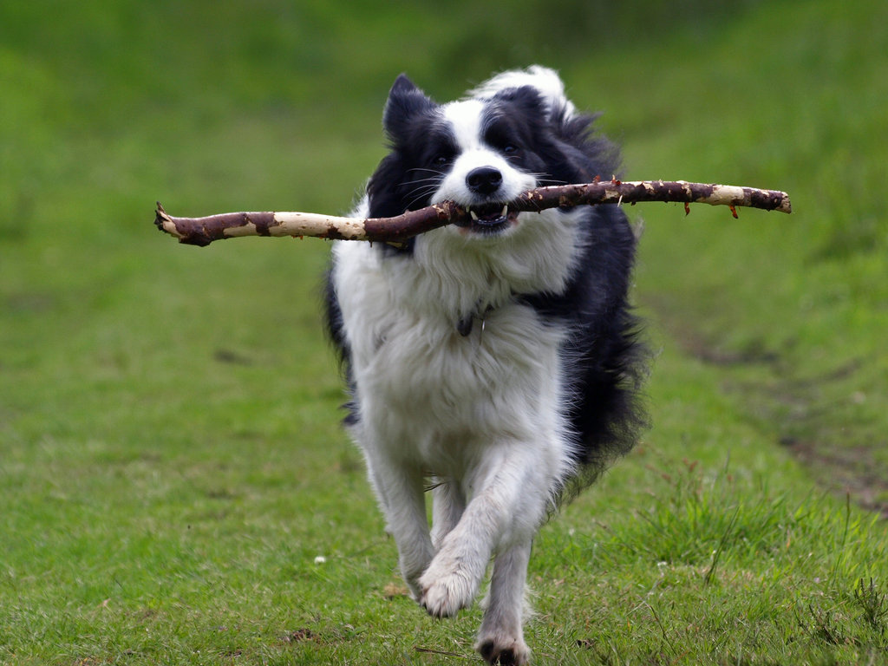
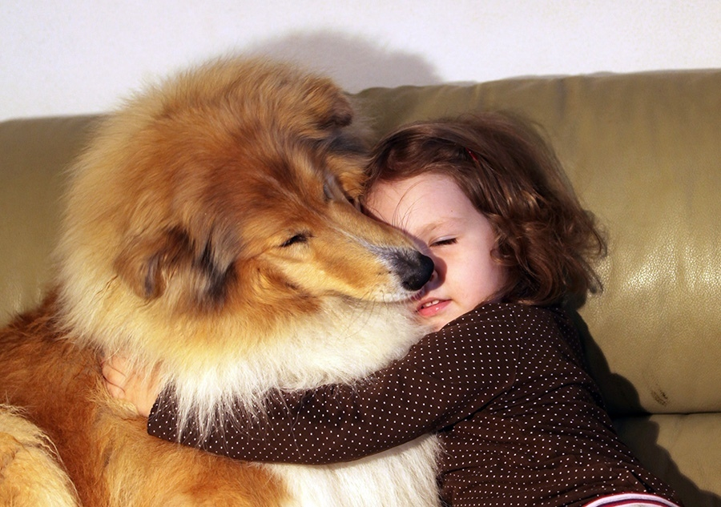

General Information
The well-bred Collie is sweet, friendly, and gentle. She is a family dog and enjoys being part of all household activities. Especially fond of kids, she enjoys playing with them and protectively watching over them. If those qualities weren't positive enough, the Collie tops them with her intelligence and loyalty. This dog is smart and learns quickly. And her devotion? She would probably swim through shark-infested waters to save her owner.
Hyperactive Dog
The Collie lives comfortably in the city or the country, as long as she has enough exercise. A brisk, daily walk and yard play are sufficient. Mostly, she wants to be with her family, meaning she is not a candidate for a backyard lifestyle. If left alone for too long, she tends to bark excessively. While some barking is normal in this herding breed, that's how she warned the shepherd of wolves, she will bark her head off when she's bored, lonely, or otherwise frustrated. Excessive barking can be avoided by letting the Collie join in all family activities, and by keeping her mentally challenged with ongoing obedience training or dog sports.
Children and other Pets
The playful Collie is known for her love of children, even those she wasn't raised with. She's highly protective of the kids in her family, watching over them and keeping them safe from danger. As with every breed, you should always teach children how to approach and touch dogs, and always supervise any interactions between dogs and young children to prevent any biting or ear or tail pulling on the part of either party. Teach your child never to approach any dog while he's eating or sleeping or to try to take the dog's food away. No dog, no matter how friendly, should ever be left unsupervised with a child. The Collie is also protective of and gentle with other pets in her family. She's an affectionate, tender guardian, willing to watch over almost any other pet you have.
Recap
All of these reasons can put together an idea as to why you may or may not want to become a Collie owner!